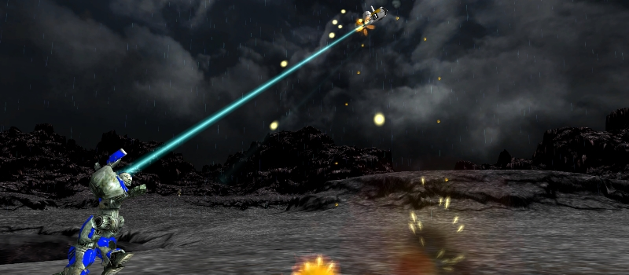
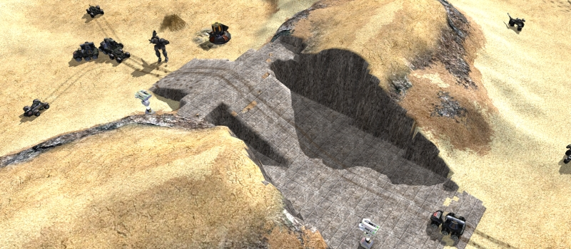
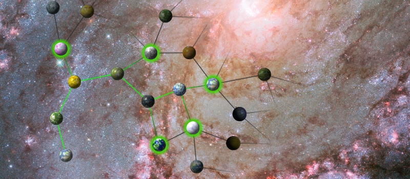
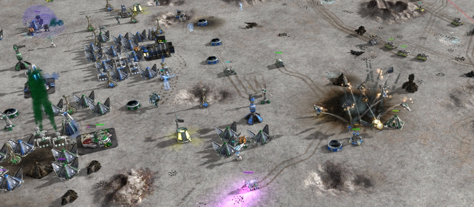
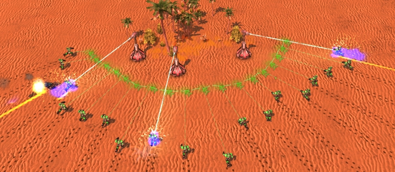
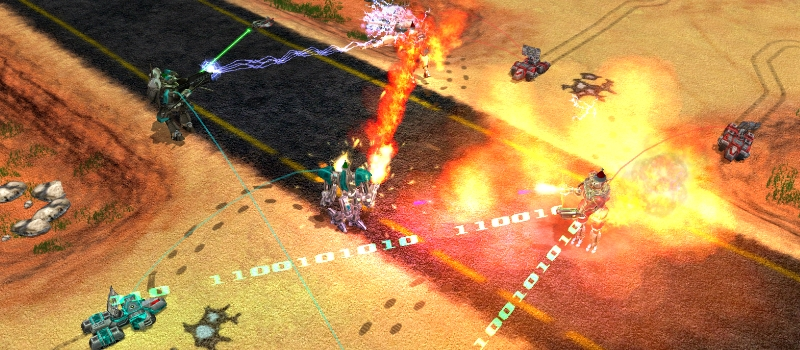

Commander wanted!
Drive giant robots, build an army of a thousand Fleas, move mountains if needed, bury the enemy at all cost!
Free and open source, for Windows and Linux. Also on Steam and itch.io.
- Real time strategy.
- Physically simulated units and projectiles.
- Terrain manipulation.
- 100+ varied units with unique abilities.
- Singleplayer campaign.
- Challenging, non-cheating AI.
- Multiplayer 1v1 - 16v16, FFA, coop.
- Multiplayer online campaign.
- Really free, no in-game currency, no unfair multiplayer.

Fully Utilized Physics
Simulated unit and projectile physics is used to a level rarely found in a strategy game.
- Use small nimble units to dodge slow moving projectiles.
- Hide behind hills that block weapon fire, line of sight and radar.
- Toss units across the map with gravity guns.
- Transport a battleship to a hilltop - for greater views and gun range.

Manipulate the Terrain
The terrain itself is an ever-changing part of the battlefield.
- Wreck the battlefield with craters that bog down enemy tanks.
- Dig canals to bring your navy inland for a submarine-in-a-desert strike.
- Build ramps, bridges, entire fortress if you wish.
- Burn your portrait into continental crust using the planetary energy chisel.

Singleplayer Campaign and Challenging AI
Enjoy many hours of single player and coop fun with our campaign, wide selection of non-cheating AIs and a survival mode against an alien horde.
- Explore the galaxy and discover technologies in our singleplayer campaign.
- Face a challenging AI that is neither brain-dead nor a clairvoyant cheater.
- Have some coop fun with friends, surviving waves of chicken-monsters.
- Cloaking? Resurrection? Tough choices customizing your commander.

Casual and Competitive Multiplayer
Zero-K was built for multiplayer from the start, this is where you can end up being hooked for a decade.
- Enjoying epic scale combat? Join our 16v16 team battles!
- Looking for a common goal? Fight AIs or waves of chicken-monsters.
- Prefer dancing on a razor's edge? Play 1v1 in ladder and tournaments.
- Comebacks, betrayals, emotions always running high in FFA.
- Want to fight for a bigger cause? Form a clan and join PlanetWars, competitive online campaign with web-game strategic elements, diplomacy and backstabbing.

Power to the People
We are RTS players at heart, we work for nobody. We gave ourselves the tools we always wanted to have in a game.
- Do what you want. No limits to camera, queue or level of control.
- Paint a shape, any shape, and units will move to assume your formation.
- Want to spend more time on tactics? Use construction priorities.
- Want to focus on economy? Order units to kite, strafe or zig zag bullets.

Plenty of Stuff to Explode Explore
Zero-K is a long term project and it shows, millions hours of proper multiplayer testing and dozens of people contributing ever expanding content.
- Learn to use all of our 100+ units and play on hundreds of maps.
- Invent the next mad team-tactics to shock enemies and make allies laugh.
- Combine cloaking, teleports, shields, jumpjets, EMP, napalm, gravity guns, black hole launchers, mind control and self-replication.
- Tiny flea swarm that clings to walls?
Jumping "cans" with steam-spike?
Buoys that hide under water to ambush ships?
Mechs that spew fire and enjoy being tossed from air transports?
Carrier with cute helicopters?
Jumping Jugglenaut with dual wielding gravity guns?
Meet them in Zero-K!